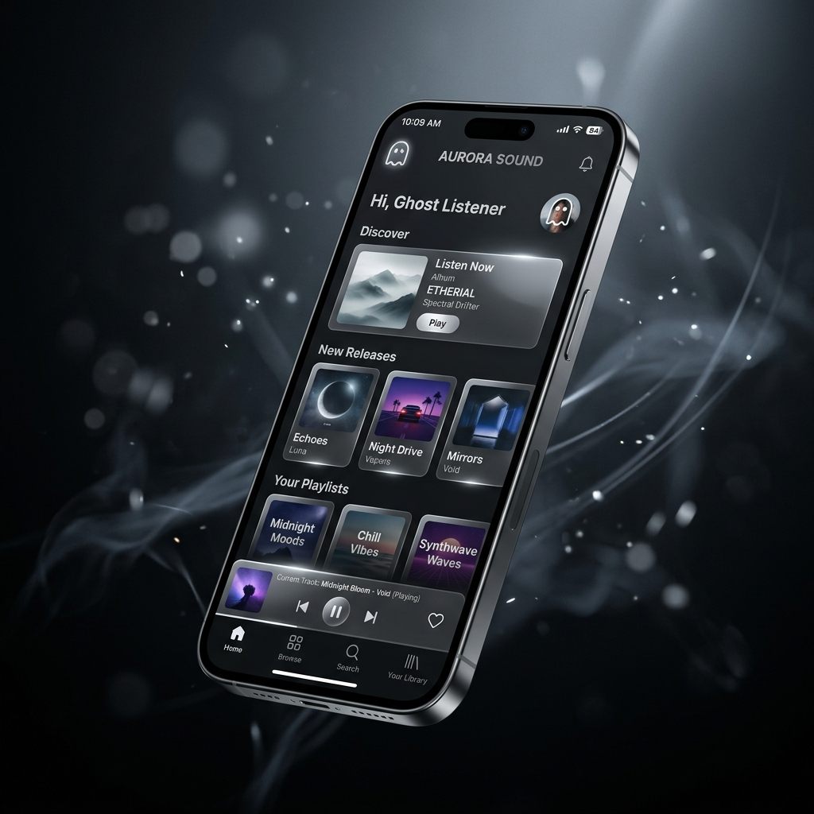
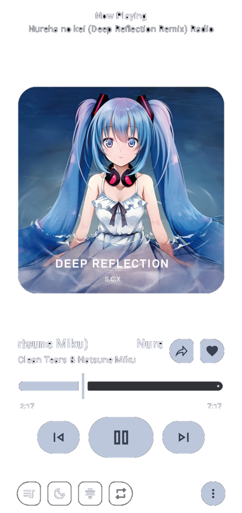

La música que amas,
sin interrupciones.
Tu biblioteca, tus reglas. Hemos diseñado GhostyMusicY para que la tecnología desaparezca y solo quede lo más importante: la conexión profunda con cada melodía.

El arte de escuchar.
Inmersión Total
Cada vez que reproduces una canción, la interfaz se adapta fluidamente creando un efecto Parallax profundo que cobra vida en tus manos.

Desconexión Absoluta
Convierte tu dispositivo en una fortaleza musical. Activa el Modo Offline y disfruta de un ecosistema que funciona sin depender de conexiones externas.
Tu biblioteca, tu esencia
Agrupa tus emociones en Playlists Nativas. Una base de datos ultrarrápida diseñada exclusivamente para organizar tu banda sonora personal de forma intuitiva e instantánea.
Siente la diferencia hoy.
Descarga la última versión de manera directa y comienza a escuchar tu música con la calidad que mereces. Libre y sin ataduras.
Descargar APK Seguro